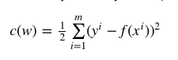
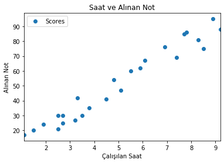

Linear Regression
Linear Regression
Lineer regresyon bir veya birden fazla (bağımsız) değişken ile başka bir (bağımlı) değişken arasındaki bağlantıyı modellemek için kullanılan bir yöntemdir.
Herhangi bir lineer fonksiyonu şu şekilde ifade edebiliriz:
f(x)=y=w0+w1x1+w2x2
Lineer regresyon ile amacımız verilmiş olan x’leri ve y’leri kullanarak w değerlerini bulmak. w değerlerini bulduktan sonra artık y değeri bilinmeyen ama x değerleri verilmiş olan bir veri ile y değeri hesaplanabilecek.
Maliyet Fonksiyonu
Lineer regresyonda w değerlerini öyle bir şekilde bulunmalı ki tahmin edilen y değeri ile gerçek y değeri arasındaki hata minimum olsun. Bu durumda asıl amacımız gerçek y değerleri ile tahmin edilen y değerleri arasındaki farkı gösterecek olan maliyet fonksiyonunu (cost function) minimize etmek. Maliyet fonksiyonu şu şekilde gösterilmektedir:

Buradaki notasyonlar şunları ifade etmektedir:
- x^i: verisetinde i numaralı satırın özellikleri.
- f(x^i): tahmin edilen y değeri
- y^i: asıl y değeri
Tahmin edilen y ile asıl y değerini çıkardığımızda asılında farkı elde etmiş oluyoruz fakat negatif değerleri ortadan kaldırmak için karesini alıyoruz. En sonunda hesaplanan maliyetin 1/2 ile çarpılması ise geleneksel bir durum.
Python ile Linear Regression
Adım 1
# import library
import pandas as pd
import matplotlib.pyplot as plt
import numpy as np
Adım 2
# import data
df = pd.read_csv("student_scores.csv")
df.head()
| Hours | Scores | |
|---|---|---|
| 0 | 2.5 | 21 |
| 1 | 5.1 | 47 |
| 2 | 3.2 | 27 |
| 3 | 8.5 | 75 |
| 4 | 3.5 | 30 |
Görselleştirme yapıyoruz:
df.plot(x='Hours', y='Scores', style='o')
plt.title('Saat ve Alınan Not')
plt.xlabel('Çalışılan Saat')
plt.ylabel('Alınan Not')
plt.show()

Adım 3
X = df.iloc[:, :-1].values
y = df.iloc[:, 1].values
Adım 4
Verimizi train ve test olmak üzere ikiye ayırıyoruz. Burada %20 test verisi mevcut olarak ve %80'de eğitim verisi olacak. Random_state değerini 42 verdiğimiz zaman test ve eğitim verisi olarak böleceği zaman her daim aynı şekilde böler.
from sklearn.model_selection import train_test_split
X_train, X_test, y_train, y_test = train_test_split(X, y, test_size=0.2, random_state=42)
Adım 5
Lineer regresyon algoritmamızı ekliyoruz.
from sklearn.linear_model import LinearRegression
regressor = LinearRegression()
regressor.fit(X_train, y_train)
LinearRegression(copy_X=True, fit_intercept=True, n_jobs=None, normalize=False)
print(regressor.intercept_)
2.018160041434683
print(regressor.coef_)
[9.91065648]
Adım 6
y_pred = regressor.predict(X_test)
result = pd.DataFrame({'Actual': y_test, 'Predicted': y_pred})
result.head()
| Actual | Predicted | |
|---|---|---|
| 0 | 20 | 16.884145 |
| 1 | 27 | 33.732261 |
| 2 | 69 | 75.357018 |
| 3 | 30 | 26.794801 |
| 4 | 62 | 60.491033 |
Adım 7
from sklearn import metrics
print('Mean Absolute Error:', metrics.mean_absolute_error(y_test, y_pred))
print('Mean Squared Error:', metrics.mean_squared_error(y_test, y_pred))
print('Root Mean Squared Error:', np.sqrt(metrics.mean_squared_error(y_test, y_pred)))
Mean Absolute Error: 4.183859899002975
Mean Squared Error: 21.5987693072174
Root Mean Squared Error: 4.6474476121003665
Son Güncelleme: 2 Aralık 2020 - Perşembe